Task 1: 계획-구성-검증
이 활동에서는 Amazon Q의 채팅, 에이전트, 규칙, MCP 기능을 종합적으로 활용하여 실제 웹 애플리케이션을 개발하는 전체 과정을 실습합니다. Amazon Q에 명확한 요구사항을 전달하여 개발 계획을 수립하고, 계획에 따라 코드를 구현하며, 발생하는 문제를 해결하는 과정을 통해 AI 기반 개발 생산성을 체험하는 것을 목표로 합니다.
Act 1: 프롬프트 엔지니어링
AI 모델과 효과적으로 소통하기 위해서는 프롬프트 엔지니어링이 중요합니다. AI에 작업을 요청할 때는 원하는 결과물을 명확하고 상세하게 전달해야 합니다. 요구사항이 구체적일수록 AI는 사용자의 의도를 더 정확히 파악하고 만족스러운 결과물을 생성할 수 있습니다.
예를 들어, 단순히 "웹사이트 만들어줘"라고 요청하는 것보다 아래와 같이 구체적인 기술 스택, 기능, 제약 조건 등을 포함하여 요청하는 것이 훨씬 효과적입니다.
나쁜 프롬프트 예시:
AWS Bedrock 서비스를 사용해서 AI 이미지 갤러리 웹사이트 만들어줘.
좋은 프롬프트 예시:
Python Streamlit 프레임워크 기반으로 AWS AI Image Gallery 웹 애플리케이션을 구성해줘.
- 사용할 Bedrock FM 이미지 생성 모델: Amazon Nova Canvas
- 주요 기능:
- 텍스트 프롬프트로 이미지 생성
- 생성된 이미지를 S3 버킷에 저장
- 저장된 이미지를 갤러리 형태로 조회
- 제약 조건:
- 이미지 생성과 갤러리는 한 화면에 표시
- 테스트 코드는 작성하지 않음
좋은 프롬프트를 작성하는 것 자체가 어렵게 느껴진다면, 이 역시 Amazon Q에게 물어볼 수 있습니다. 예를 들어 "Python Streamlit 기반의 Bedrock 이미지 생성 및 이미지 갤러리 웹 개발을 요청하려고 하는데, 어떤 항목들을 포함해서 프롬프트를 작성하면 좋을까?"와 같이 질문하여 프롬프트 작성을 위한 가이드를 받을 수 있습니다.
Act 2: 개발명세서 작성 (Plan)
-
채팅에
/clear명령어를 사용하거나, 상단 탭에서 "+" 버튼을 눌러, 새로운 채팅을 활성화합니다.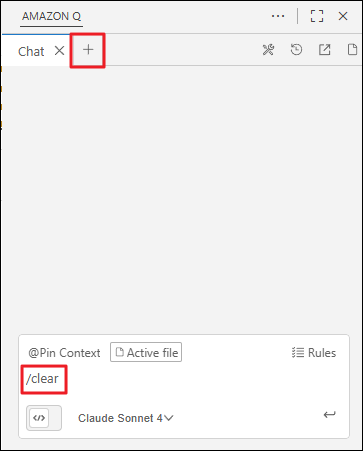
-
아래 내용으로 Amazon Q에 요청하여 개발명세서를 작성합니다.
Python Streamlit 프레임워크 기반으로 AWS AI Image Gallery 웹 애플리케이션을 구성하고자 합니다. - 사용할 AI 이미지 생성 모델: Amazon Nova Canvas - 주요 기능: - 사용자가 텍스트 프롬프트로 이미지를 생성 ( 다른 옵션 없이 Text로만 ) - 생성된 이미지를 Amazon S3 버킷에 저장 - 저장된 이미지를 웹에서 갤러리 형태로 조회 - 이미지 생성 화면과 갤러리를 동일 뷰(한 화면)에서 동시에 표시 해당 애플리케이션을 구성하기 위해 아래 항목이 포함된 구현 가이드를 `implement_guide.md` 문서로 작성하세요. (※ 해당 문서 작성 외에 다른 작업은 금지) 1. 요구사항 2. 기술 스택 3. 구현 단계 (최대 5단계) 추가 조건 - 서버 메인 파일은 반드시 `src/app.py`로 지정하세요. - 프로젝트 루트에서 `uv run main.py` 명령어 실행 시 서버가 동작하도록 설정 가이드를 포함하세요. - 환경변수는 S3 버킷 이름과 리전을 받도록 하세요. (단, AWS Bedrock 서비스 리전은 us-east-1로 고정) - 구현 가이드라인에는 테스트, 배포, 코드 최적화 관련 내용은 포함하지 마세요.
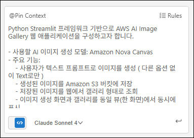
-
docs/에 문서가 생성된 것을 확인하고, 생성된 문서의 내용을 검토합니다.Danger
정교한 프롬프트를 구성해서 요청해도 같은 결과가 나오지 않을 수 있습니다.
Note
예시로 나온 implement_guide.md 파일은 다음과 같이 나왔으며, 해당 예시 파일를 그대로 사용하셔도 됩니다.
# AWS AI Image Gallery 구현 가이드 ## 1. 요구사항 ### 기능 요구사항 - 텍스트 프롬프트를 통한 AI 이미지 생성 (Amazon Nova Canvas 사용) - 생성된 이미지를 Amazon S3 버킷에 자동 저장 - 저장된 이미지를 갤러리 형태로 웹에서 조회 - 이미지 생성과 갤러리를 동일 화면에서 동시 표시 ### 기술 요구사항 - Python Streamlit 프레임워크 기반 웹 애플리케이션 - Amazon Nova Canvas 모델 (amazon.nova-canvas-v1:0) 사용 - AWS Bedrock 서비스 리전: us-east-1 고정 - 패키지 관리: uv 사용 - 서버 메인 파일: `src/app.py` - 실행 명령어: `uv run main.py` ### 환경변수 - `S3_BUCKET_NAME`: S3 버킷 이름 - `AWS_REGION`: S3 버킷 리전 (예: us-east-1, ap-northeast-2) ## 2. 기술 스택 ### 프론트엔드 - **Streamlit**: 웹 UI 프레임워크 - **Streamlit Components**: 이미지 표시 및 갤러리 구성 ### 백엔드 - **Python 3.9+**: 메인 개발 언어 - **boto3**: AWS SDK for Python - **Pillow**: 이미지 처리 ### AWS 서비스 - **Amazon Bedrock**: AI 모델 호스팅 (Nova Canvas) - **Amazon S3**: 이미지 저장소 ### 패키지 관리 - **uv**: Python 패키지 관리자 ## 3. 구현 단계 ### 1단계: 프로젝트 구조 및 의존성 설정 - 프로젝트 디렉토리 구조 생성 (`src/`, `docs/`) - `pyproject.toml` 파일 생성 및 의존성 정의 - `main.py` 엔트리 포인트 파일 생성 - 환경변수 설정 파일 구성 **주요 의존성:** ```toml dependencies = [ "streamlit>=1.28.0", "boto3>=1.34.0", "pillow>=10.0.0", "python-dotenv>=1.0.0" ] ``` ### 2단계: AWS 서비스 연동 모듈 구현 - AWS Bedrock 클라이언트 설정 (us-east-1 리전) - Amazon Nova Canvas 모델 호출 함수 구현 - S3 클라이언트 설정 및 이미지 업로드 함수 구현 - 이미지 생성 및 저장 통합 함수 구현 **핵심 API 구조:** ```python # Nova Canvas 요청 구조 { "taskType": "TEXT_IMAGE", "textToImageParams": {"text": prompt}, "imageGenerationConfig": { "seed": random_seed, "quality": "standard", "width": 512, "height": 512, "numberOfImages": 1 } } ``` ### 3단계: Streamlit UI 구성 - 메인 페이지 레이아웃 설정 (사이드바 + 메인 영역) - 텍스트 입력 폼 및 이미지 생성 버튼 구현 - 실시간 상태 표시 (로딩, 성공, 오류) - 생성된 이미지 즉시 표시 기능 ### 4단계: 이미지 갤러리 기능 구현 - S3 버킷에서 이미지 목록 조회 함수 - Streamlit columns를 활용한 그리드 레이아웃 갤러리 - 이미지 메타데이터 표시 (생성일시, 프롬프트) - 페이지네이션 또는 무한 스크롤 구현 ### 5단계: 통합 및 최적화 - 이미지 생성과 갤러리를 단일 화면에 통합 - 세션 상태 관리로 사용자 경험 개선 - 오류 처리 및 사용자 피드백 메시지 구현 - 성능 최적화 (이미지 캐싱, 비동기 처리) ## 실행 설정 ### 환경변수 설정 ```bash export S3_BUCKET_NAME="your-image-gallery-bucket" export AWS_REGION="us-east-1" ``` ### 서버 실행 ```bash # 프로젝트 루트에서 실행 uv run main.py ``` ### 파일 구조 ```toml project/ ├── main.py # 엔트리 포인트 ├── pyproject.toml # 프로젝트 설정 ├── src/ │ ├── app.py # Streamlit 메인 애플리케이션 │ ├── aws_services.py # AWS 서비스 연동 │ └── utils.py # 유틸리티 함수 └── docs/ └── implement_guide.md # 구현 가이드 (본 문서) ```
Act 3. 개발명세서 기반 구현 (Implement)
-
생성된 개발명세서 문서(
docs/implement_guide.md)를 Context로 추가하고,
아래 내용으로 Amazon Q에 요청하여 애플리케이션을 구성합니다.
개발명세서 문서를 참고해서 애플리케이션을 구성하세요.Info
프로젝트 규모가 작은 경우에는 전체 애플리케이션 구성을 한 번에 요청할 수 있습니다.
하지만 규모가 큰 경우에는 더 높은 품질을 위해 단계별로 애플리케이션을 구성하실 것을 권장드립니다.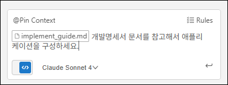
-
생성된 코드와 응답을 확인합니다.
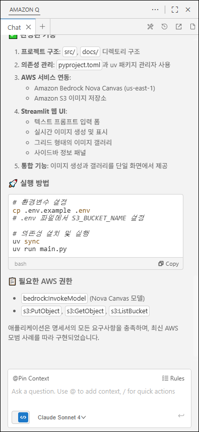
Act 4. 검증 및 테스트 (Verification & Test)
Warning
해당 실습 과정부터 내용이 동일하지 않을 수 있습니다.
-
Code-Server 또는 IDE 환경에서 (Ctrl + `)를 눌러서 터미널을 활성화합니다.
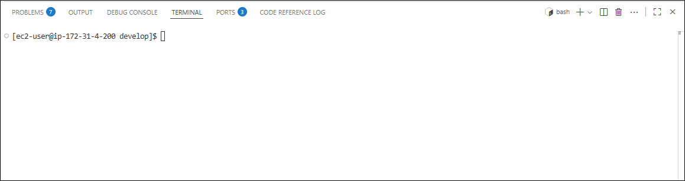
-
생성된 응답의 내용을 참고해서 환경 변수를 설정합니다.
# 환경변수 설정 cp .env.example .env # .env 파일에서 S3_BUCKET_NAME 설정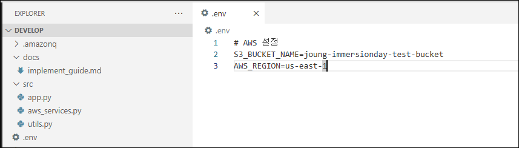
Warning
.env파일이 이미 생성되어 있을 수 있습니다. -
생성된 응답의 내용을 참고해서 터미널에서 서버를 실행합니다.
uv sync uv run main.py -
터미널에서 에러가 발생한다면, 해당 에러 메세지 전체를 복사하거나, 일부를 복사하여 아래와 같이 Amazon Q에 이슈 해결 요청을 합니다.
[명령어 입력 또는 행동 등] 시 아래와 같이 오류/이슈가 발생했습니다. [발생 오류 및 이슈 내용]제 경우에는 아래 절차로 진행했습니다.
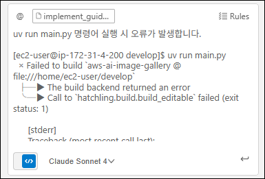
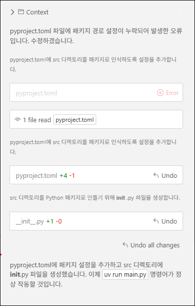
-
에러를 해결한 뒤, uv run main.py 명령어로 서버를 실행합니다.
서버가 실행되면, Code-Server 브라우저 우측 하단에 "Open in Browser"를 눌러 웹앱을 확인합니다.Info
해당 알림창이 사라졌을 경우, 우측 하단에 종 ( 🔔 ) 을 눌러 다시 표시할 수 있습니다.
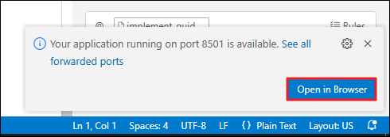
Warning
보이는 화면이 다를 수 있습니다.
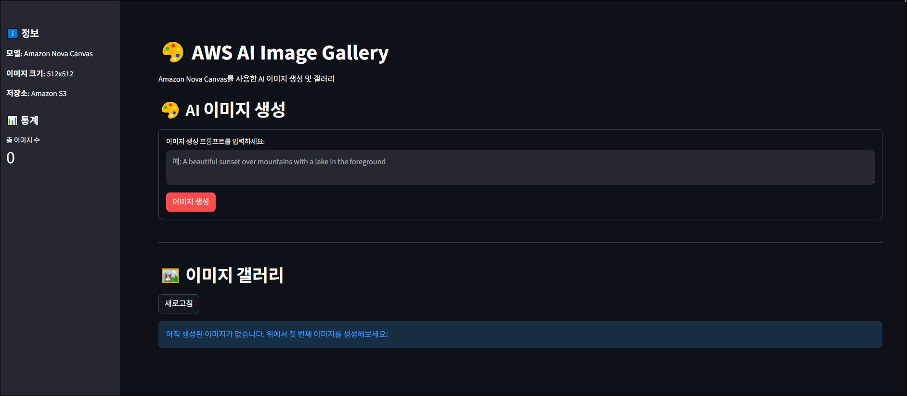
-
원하는 이미지가 생성되는지 확인하고, 이미지가 버킷에 저장되고 갤러리에 표시되는지 확인합니다.
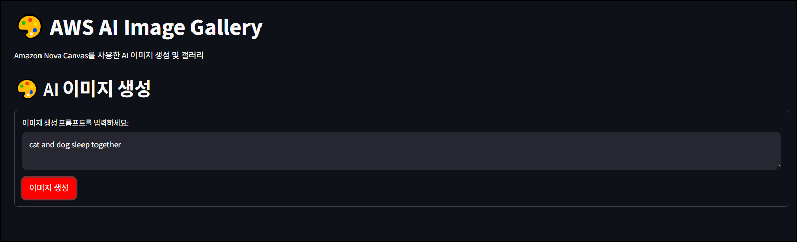
요약
이 워크숍 활동에서 다음 항목을 실습했습니다.
- ✅ 프롬프트 엔지니어링
- ✅ Amazon Q Developer를 활용한 개발명세서 작성
- ✅ Amazon Q Developer를 활용한 개발명세서 기반 애플리케이션 구성
- ✅ Amazon Q Developer로 이슈 및 오류 해결
다음 활동에서는 Amazon Q를 활용해서 구성된 웹앱에 기능을 추가하는 실습을 해볼 것입니다.